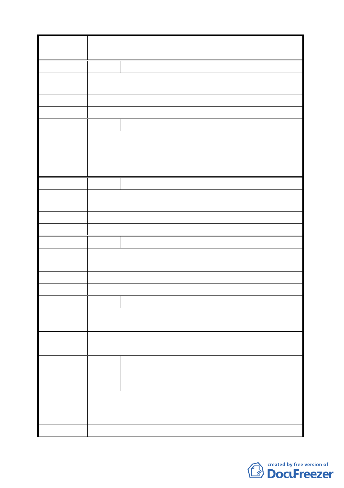

案
名
變更臺北市士林區至善段五小段 80、81、117 地號等加油站
用地為公園用地細部計畫案
編 號 3 陳情人 林金梅
陳 情 理 由 贊成興建公園，接下來要興建公園需辦公聽會。
建議辦法
委 員 會 決 議 同編號 2。
編 號 4 陳情人 徐光陞
陳 情 理 由 外雙溪公園已經太多，不需要再建公園。
建議辦法
委 員 會 決 議 同編號 1。
編 號 5 陳情人 張子柏
陳 情 理 由 本區因有故宮，應增加遊客相關設施。
建 議 辦 法 增加公園綠地遊樂設施。
委 員 會 決 議 同編號 2。
編 號 6 陳情人 黃羅月娥
陳 情 理 由 離故宮博物院太近，影響文物古董。附近已有 4 個加油站，
離大直自強隧道口加油站僅有 1 公里。
建 議 辦 法 請變更為公園用地。
委 員 會 決 議 同公展案。
編 號 7 陳情人 黃信吉
故宮路左轉至善路已是擁塞，若再設立加油站，更是危險阻
陳 情 理 由 塞交通，對故宮博物院好比是一顆不定時炸彈。
建 議 辦 法 請作為公園用地，美化環境提升觀光。
委 員 會 決 議 同編號 6。
蔡啟海、李韓秀雲、張秀雲、張占勝、陳
編 號 8 陳情人 恆泰、陳鐵夫、丁鄭春霞、陳瑞珠、楊銀
珠
陳 情 理 由 設加油站危及故宮，污染環境。
建 議 辦 法 請改為公園用地。
委 員 會 決 議 同編號 6。
39